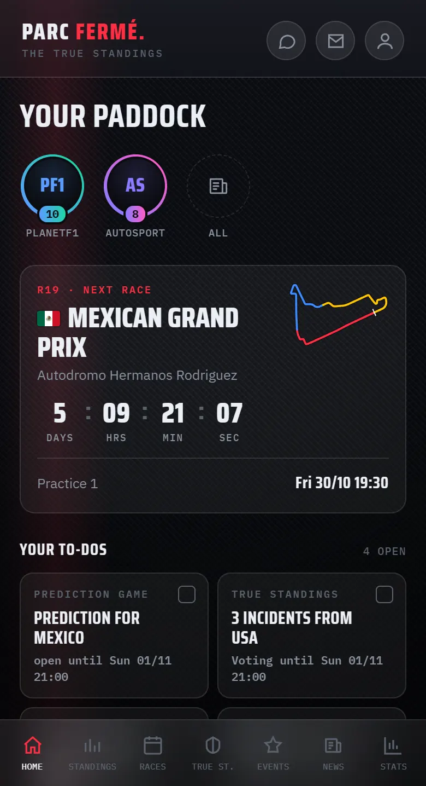
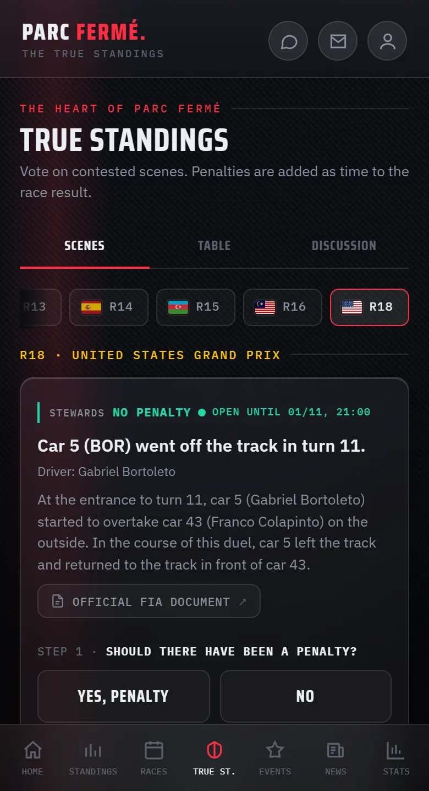
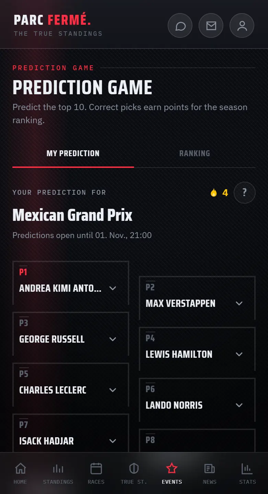
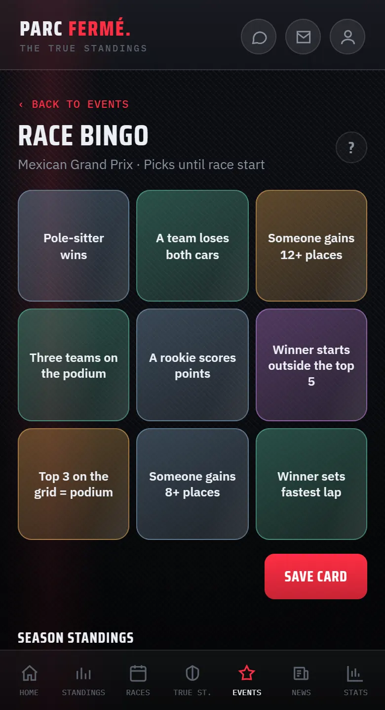
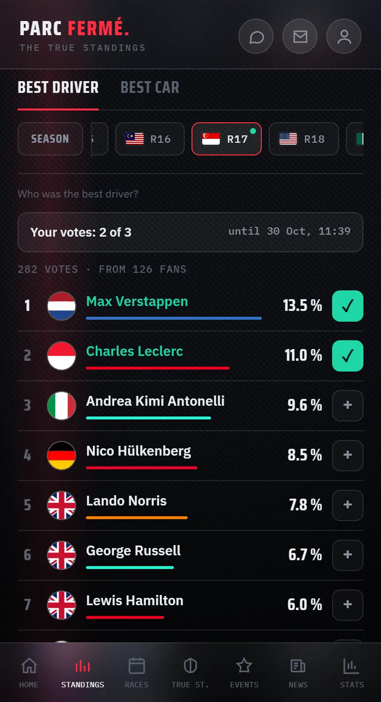
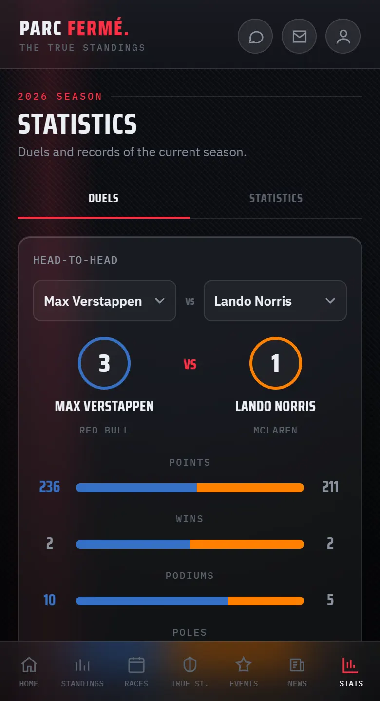

PARC FERMÉ
Your paddock for every race weekend.
Schedule and results, your verdict on contested incidents, prediction game, Race Bingo and more — free, without ads and without tracking.

What you get
- 01Race weekend
Every session with its start time in your time zone, countdown and weather. Afterwards the results with podium — sprints included.
- 02True Standings
Contested incidents from every race: you decide whether there should have been a penalty. See the championship as the fans would rule it.
- 03Prediction game
Predict the top 10 before lights out, collect points and take on your friends in your own rooms.
- 04Race Bingo
Fill your card with nine events. Complete lines count double; once a round is scored you can see everyone’s cards.
- 05Fan Power
Pick the best driver and the best car after every race — per race and across the season.
- 06Statistics
Team-mate duels, records and a builder for your own analyses, for drivers and teams.
- 07Race Word
A new motorsport term every day, six guesses. Build your streak.
- 08And more
Start Lights, the “Grill the Fan” quiz, polls, a watch-along chat during the race and headlines as stories.
A look inside





Fair and private
Sign-in with Google
You need an account for the prediction game, votes, games and chat. You sign in with your Google account — we only take your e-mail address and your name to create your profile. We do not access any other data in your Google account.
What we process and why is explained in the Privacy Policy.